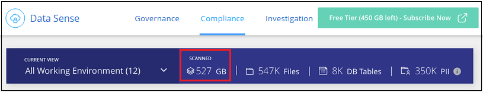
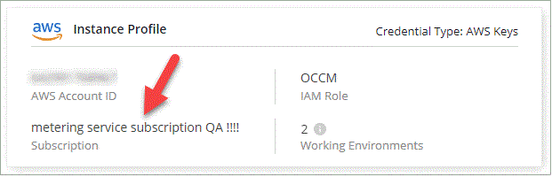

ドキュメントの変更をリクエスト
ドキュメントの変更をリクエスト GitHub で編集
GitHub で編集 寄稿者向けガイド
寄稿者向けガイドクラウドデータセンスのライセンスをセットアップする
Cloud Data Sense によってスキャンされる、 Cloud Manager のワークスペース内の最初の 1TB のデータは無料です。そのあとも引き続きデータをスキャンするには、ネットアップの BYOL ライセンス、またはクラウドプロバイダのマーケットプレイスからの Cloud Manager サブスクリプションが必要です。
さらに読む前に、いくつかのメモを記入してください。
-
クラウドプロバイダのマーケットプレイスで Cloud Manager の従量課金制（ PAYGO ）サブスクリプションにすでに登録している場合は、 Cloud Data Sense も自動的にサブスクライブされます。再度登録する必要はありません。
-
Cloud Data Sense Bring Your Own License （ BYOL ；お客様所有のライセンス）は、スキャンを計画しているワークスペース内のすべての作業環境およびデータソースで使用できるフローティングライセンスです。Digital Wallet にアクティブなサブスクリプションが表示されます。
クラウドデータ従量課金制のサブスクリプションを使用
クラウドプロバイダのマーケットプレイスから従量課金制のサブスクリプションを購入すると、 Cloud Volumes ONTAP システムや、クラウドデータセンスなどの多数のクラウドデータサービスのライセンスを取得できます。
いつでもサブスクライブでき、データ量が 1TB を超えるまでは料金は発生しません。データセンスダッシュボードからスキャンされているデータの総容量を常に確認できます。また、 [ 今すぐサブスクライブ ] ボタンを使用すると、準備が整ったときに簡単にサブスクライブできます。
 ボタン。"]
これらの手順は、 _Account Admin_role 権限を持つユーザが実行する必要があります。
-
Cloud Manager コンソールの右上にある設定アイコンをクリックし、 * クレデンシャル * を選択します。

-
AWS インスタンスプロファイル、 Azure Managed Service Identity 、 Google Project のクレデンシャルを検索します。
サブスクリプションは、インスタンスプロファイル、マネージドサービス ID 、または Google プロジェクトに追加する必要があります。充電ができない。
すでにサブスクリプション（ AWS の場合は以下を参照）をお持ちの場合、設定はすべて済みです。他に必要な機能はありません。

-
まだサブスクリプションをお持ちでない場合は、資格情報の上にカーソルを置いてアクションメニューをクリックし、 * サブスクリプションの関連付け * をクリックします。

-
既存のサブスクリプションを選択し、 [* アソシエイト * ] をクリックするか、 [ * サブスクリプションの追加 * ] をクリックして、手順を実行します。
次のビデオでは、を関連付ける方法を示します "AWS Marketplace" AWS サブスクリプションへのサブスクリプション：
次のビデオでは、を関連付ける方法を示します "Azure Marketplace で入手できます" Azure サブスクリプションへのサブスクリプション：
次のビデオでは、を関連付ける方法を示します "GCP Marketplace" GCP サブスクリプションへのサブスクリプション：
クラウドデータセンス BYOL ライセンスを使用する
ネットアップが提供するお客様所有のライセンスには、 1 年、 2 年、 3 年の期間があります。BYOL * Cloud Data Sense * ライセンスは、 _ フローティング _ ライセンスで、 * すべての作業環境とデータソースで合計容量が共有され、初期ライセンス付与と更新が容易になります。
クラウドデータセンスライセンスをお持ちでない場合は、こちらからお問い合わせください。
-
mailto ： ng-contact-data-sense@netapp.com ？ subject = ライセンス [ ライセンスを購入するために電子メールを送信 ] 。
-
Cloud Manager の右下にあるチャットアイコンをクリックして、ライセンスを申請してください。
使用しない Cloud Volumes ONTAP 用の未割り当てのノードベースライセンスがある場合は、必要に応じて、ドル同等かつ同じ有効期限を持つ Cloud Data Sense ライセンスに変換できます。 "詳細については、こちらをご覧ください"。
Cloud Manager の Digital Wallet ページを使用して、 Cloud Data Sense BYOL ライセンスを管理します。新しいライセンスを追加したり、既存のライセンスを更新したりできます。
Cloud Data Sense ライセンスファイルを入手します
Cloud Data Sense ライセンスを購入したら、 Cloud Data Sense シリアル番号と NSS アカウントを入力するか、 NLF ライセンスファイルをアップロードして、 Cloud Manager でライセンスをアクティブ化します。次の手順は、 NLF ライセンスファイルを取得する方法を示しています。
インターネットにアクセスできないオンプレミスサイトのホストに Cloud Data Sense を導入した場合は、インターネットに接続されたシステムからライセンスファイルを取得する必要があります。シリアル番号と NSS アカウントを使用してライセンスをアクティブ化することは、ダークサイトへのインストールには使用できません。
-
にサインインします "ネットアップサポートサイト" [ システム ] 、 [ ソフトウェアライセンス ] の順にクリックします。
-
Cloud Data Sense ライセンスのシリアル番号を入力します。

-
[* License Key] で、 [* Get NetApp License File* ] をクリックします。
-
Cloud Manager アカウント ID （サポートサイトではテナント ID と呼ばれます）を入力し、 * Submit * をクリックしてライセンスファイルをダウンロードします。

Cloud Manager アカウント ID は、 Cloud Manager の上部にある「 * Account * 」ドロップダウンを選択し、アカウントの横にある「 * Manage Account * 」をクリックすると確認できます。アカウント ID は、 [ 概要 ] タブにあります。
Cloud Data Sense BYOL ライセンスをアカウントに追加します
Cloud Manager アカウント用の Cloud Data Sense ライセンスを購入したら、そのライセンスを Cloud Manager に追加して Data Sense サービスを使用できるようにする必要があります。
-
Cloud Managerの左側のナビゲーションメニューで、* Digital Wallet をクリックし、 Data Services Licenses *タブを選択します。
-
[ ライセンスの追加 ] をクリックします。
-
_ ライセンスの追加 _ ダイアログで、ライセンス情報を入力し、 * ライセンスの追加 * をクリックします。
-
データセンスライセンスのシリアル番号があり、 NSS アカウントを知っている場合は、 * シリアル番号を入力 * オプションを選択してその情報を入力します。
お使いのネットアップサポートサイトのアカウントがドロップダウンリストにない場合は、 "NSS アカウントを Cloud Manager に追加します"。
-
データセンスライセンスファイル（ダークサイトにインストールする場合に必要）がある場合は、 * ライセンスファイルのアップロード * オプションを選択し、プロンプトに従ってファイルを添付します。

-
Cloud Manager によってライセンスが追加され、 Cloud Data Sense サービスがアクティブになります。
クラウドデータ使用ライセンスを更新します
ライセンス期間が有効期限に近づいている場合や、ライセンスで許可されている容量が上限に達している場合は、 Cloud Data Sense で通知が送信されます。

このステータスは、デジタルウォレットにも表示されます。

Cloud Data Sense ライセンスは、期限が切れる前に更新できるため、スキャンしたデータへのアクセスが中断されることはありません。
-
Cloud Manager の右下にあるチャットアイコンをクリックして、特定のシリアル番号の Cloud Data Sense ライセンスの期間延長または容量の追加をリクエストします。mailto ： ng-contact-data-sense@netapp.com ？ subject= Licensing [ ライセンスの更新をリクエストするメールを送信 ] もできます。
ライセンスの支払いが完了し、ネットアップサポートサイトに登録されると、 Cloud Manager はデジタルウォレットとデータサービスのライセンスページのライセンスを自動的に更新し、 5 分から 10 分で変更が反映されます。
-
Cloud Manager がライセンスを自動更新できない場合（ダークサイトにインストールした場合など）は、ライセンスファイルを手動でアップロードする必要があります。
-
[ データサービスライセンス ] タブの [ デジタルウォレット ] ページで、をクリックします
 アイコン"] 更新するサービスシリアル番号の場合は、 ［ * ライセンスの更新 * ］ をクリックします。
アイコン"] 更新するサービスシリアル番号の場合は、 ［ * ライセンスの更新 * ］ をクリックします。 ボタンを選択するスクリーンショット。"]
ボタンを選択するスクリーンショット。"] -
_Update License_page で、ライセンスファイルをアップロードし、 * ライセンスの更新 * をクリックします。
Cloud Manager によってライセンスが更新され、 Cloud Data Sense サービスが引き続きアクティブになるようになります。
BYOL ライセンスに関する考慮事項
クラウドデータセンス BYOL ライセンスを使用している場合、スキャンするすべてのデータのサイズが容量の上限に近づいているかライセンスの有効期限に近づいているときに、 Cloud Manager のデータセンス UI およびデジタルウォレット UI に警告が表示されます。次の警告が表示されます。
-
スキャンするデータ量がライセンスで許可された容量の 80% に達したとき、および制限に達したときに再度スキャンします
-
ライセンスの有効期限が切れる 30 日前と、ライセンスの有効期限が切れたあとに再度有効になります
Cloud Manager インターフェイスの右下にあるチャットアイコンを使用して、警告が表示されたときにライセンスを更新してください。
ライセンスの有効期限が切れてもデータセンスは実行されますが、ダッシュボードへのアクセスはブロックされるため、スキャンしたデータに関する情報を表示できません。スキャンするボリューム数を減らして容量の使用量をライセンスの上限までにする場合は、 _Configuration_page だけを使用できます。
BYOL ライセンスを更新すると、 Cloud Manager はデジタルウォレットのライセンスを自動的に更新し、すべてのダッシュボードにフルアクセスできるようになります。Cloud Manager がセキュアなインターネット接続経由でライセンスファイルにアクセスできない場合（ダークサイトにインストールされている場合など）は、手動でファイルを入手して Cloud Manager にアップロードできます。手順については、を参照してください Cloud Data Sense ライセンスを更新する方法。

|
使用しているアカウントに BYOL ライセンスと PAYGO の両方のサブスクリプションがある場合、 BYOL ライセンスの期限が切れたときに Data Sense _ が PAYGO サブスクリプションに移行することはありません。BYOL ライセンスを更新する必要があります。 |